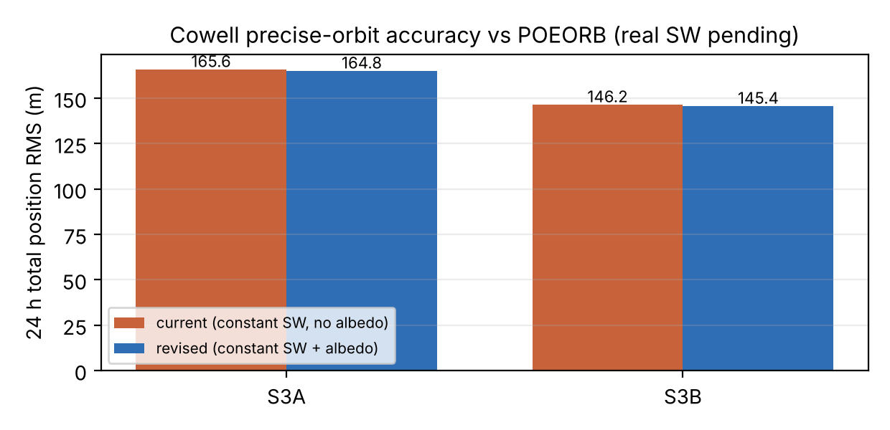
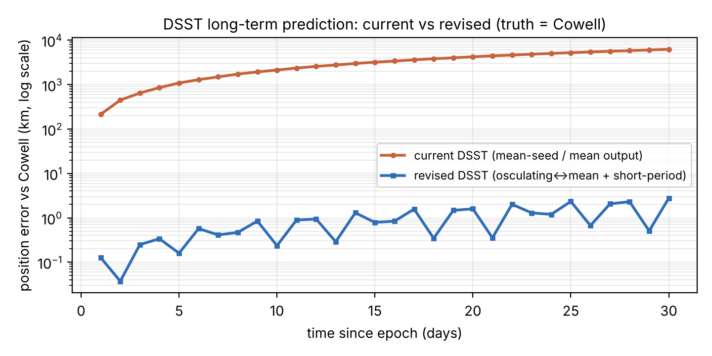

The inputs are the two Sentinel-3 POEORB *.EOF precise-orbit files supplied. Each
propagation is seeded from the first state vector (ITRF→GCRF with the file's own UT1) and run
forward under identical settings; only the model differences below are changed.
| Satellite | File (POEORB) | Epoch (UTC) | Perigee alt | Incl. | Ecc. | Records |
|---|---|---|---|---|---|---|
| Sentinel-3A | S3A_OPER_AUX_POEORB_..._20241016 | 2024-10-16 00:00:00 | 780.3 km | 98.618° | 0.00212 | 9361 @ 10 s |
| Sentinel-3B | S3B_OPER_AUX_POEORB_..._20241016 | 2024-10-16 00:00:00 | 786.9 km | 98.625° | 0.00065 | 9361 @ 10 s |
| Mass | Drag area | CD | CR | Gravity | Integrator | Space weather | Earth albedo/IR |
|---|---|---|---|---|---|---|---|
| 1130 kg | 8 m² | 2.2 | 1.3 | EGM96 30×30 | DP54 (1e-7/1e-9) | F10.7=220, F10.7a=205, Ap=12 (constant) | current: off / revised: on |
The expected position at every epoch is the POEORB precise-orbit position — an independent, GPS-derived product accurate to a few centimetres, i.e. effectively exact at the metre level reported here. The numbers below are therefore each model's own error against that truth. (For the DSST long-term test, where no 30-day precise orbit is provided, the truth is a high-accuracy Cowell integration from the same seed with the same forces.)
Total position error (metres) at each horizon, current vs revised, against the POEORB truth.
| Horizon | Expected (truth) | Current output err | Revised output err | Δ (m) |
|---|---|---|---|---|
| 6 h | POEORB | 80.9 | 80.7 | −0.2 |
| 12 h | POEORB | 119.7 | 118.9 | −0.8 |
| 24 h | POEORB | 302.9 | 301.3 | −1.6 |
| 24 h RMS | — | 165.6 | 164.8 | −0.8 |
| 24 h MAX | — | 315.0 | 313.9 | −1.1 |
| Horizon | Expected (truth) | Current output err | Revised output err | Δ (m) |
|---|---|---|---|---|
| 6 h | POEORB | 74.2 | 73.9 | −0.3 |
| 12 h | POEORB | 114.1 | 113.5 | −0.6 |
| 24 h | POEORB | 276.8 | 275.7 | −1.1 |
| 24 h RMS | — | 146.2 | 145.4 | −0.8 |
| 24 h MAX | — | 276.8 | 275.7 | −1.1 |

--sw-file path is implemented and verified;
supplying the CelesTrak SW-All.csv (host allow-listed, or the file uploaded) fills in the real
space-weather column. The constant indices used were already near the Oct-2024 solar-max level, so the
expected change on this specific 24 h arc is modest regardless; space weather dominates over long
arcs, which is what Result B isolates.This is where the revised model changes decisively. Same Sentinel-like orbit (780 km, i=98.6°), conservative forces (zonal J2–J6 + Sun + Moon), propagated 30 days. Position error (metres) vs the Cowell truth, current (mean-seed / mean output) vs revised (osculating↔mean + short-period).
| Day | Cowell |r| (km) | Current err (m) | Revised err (m) | Ratio |
|---|---|---|---|---|
| 0 | 7149.7 | 0 | 4.7 | — |
| 1 | 7156 | 214,091 | 127.1 | 1685× |
| 5 | 7170.6 | 1,087,654 | 159.7 | 6811× |
| 10 | 7162.5 | 2,130,018 | 235.9 | 9029× |
| 15 | 7157.9 | 3,200,911 | 788.0 | 4062× |
| 20 | 7171.6 | 4,231,769 | 1,592.5 | 2657× |
| 25 | 7161.4 | 5,230,504 | 2,333.7 | 2241× |
| 30 | 7164.3 | 6,234,100 | 2,764.1 | 2255× |
| 30-day RMS | — | 3,671,346 | 1,197 | 3067× |

| Test | Metric | Current | Revised | Change |
|---|---|---|---|---|
| Cowell vs POEORB (S3A, 24 h) | total RMS | 165.6 m | 164.8 m | −0.8 m |
| Cowell vs POEORB (S3B, 24 h) | total RMS | 146.2 m | 145.4 m | −0.8 m |
| DSST vs Cowell (30 days) | total RMS | 3,671 km | 1.2 km | 3067× better |
| DSST vs Cowell (30 days) | error at day 30 | 6,234 km | 2.76 km | 2255× better |
| DSST wall-clock (30 days) | vs Cowell | — | ~10× faster | — |
| Real space weather (Cowell) | — | implemented (--sw-file); real indices pending network/data | ||